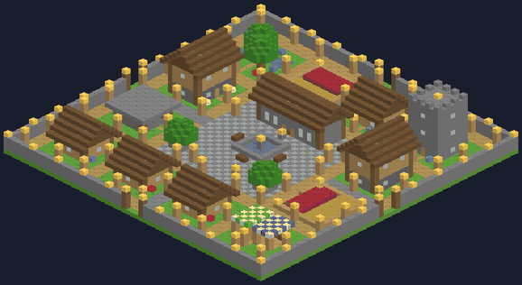
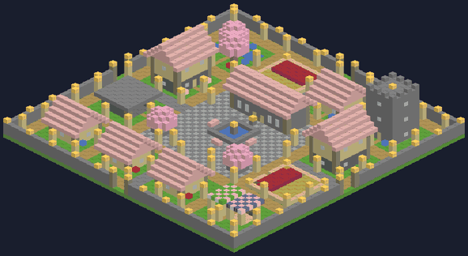

Village Cities
A Minecraft add-on: tap the City Charter and a whole city builds itself in seconds!
⬇️ Download for Minecraft
For Minecraft Bedrock on iPad, iPhone, Android and Windows. Free, no ads.
How to put it on the iPad
- Tap Download for Minecraft above, then tap Download when Safari asks.
- Open the Files app, go to Downloads, and tap VillageCities.mcaddon. Minecraft opens and says Successfully imported.
If tapping the file doesn't open Minecraft, tap the Share button and choose Minecraft.
- In Minecraft, tap Create New World (or the pencil next to an old world). Scroll to Behavior Packs, tap Available, tap Village Cities, then Activate. It works alongside Bender Forge and Mob Rider.
- Tap Create or Play. You get a free City Charter the first time you join.
How to build a city
- Find some open land. Flat and dry is best.
- Stand where you want the middle of the city, hold the City Charter, and tap Build City! Green sparkles show how big it will be.
- Happy with the spot? Tap Build City! again and watch it build!
- Changed your mind? Sneak and tap the Charter, then sneak and tap again. The city disappears and the land comes back.
Every city has
🏛️
Town hallwith a fountain and bell🏠
Houseswith beds for villagers🧑🌾
Villagerswho move in and get jobs🛒
Marketstalls with striped roofs📚
Library towerclimb up to the lookout⚒️
Blacksmithanvil and smithing table🌾
Farmsfull of ready crops🌳
Parktrees, pond and benches🏰
City wallgates, lamps and guards
Cities match the land
Meadow

Cherry blossom
Also: snowy pine, birch forest, jungle, savanna and dark forest. Every city gets its own name!
The City Charter
City Charter
Make another one in a crafting table: 1 gold ingot, 1 emerald and 3 paper.
Good to know
- Everything inside the sparkles gets replaced, so don't build a city on top of your house!
- Undo works for your newest city only.
- Cities are lit up with lanterns, so monsters can't spawn inside.
- Cities can only be built in the Overworld.
- Worlds with add-ons don't earn Xbox achievements.